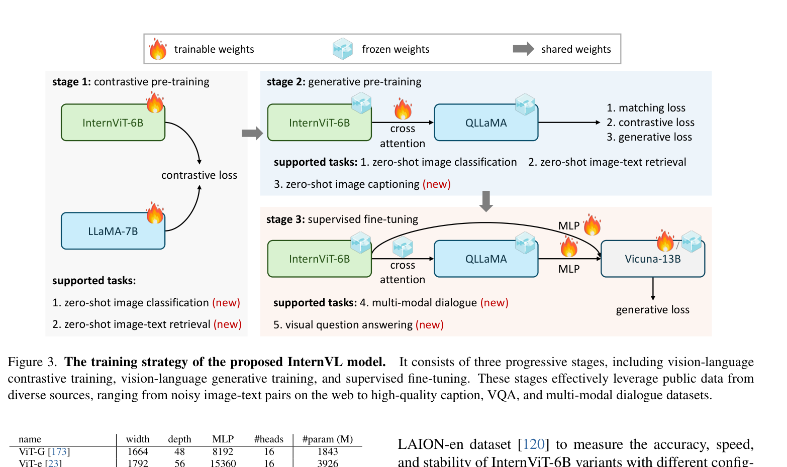
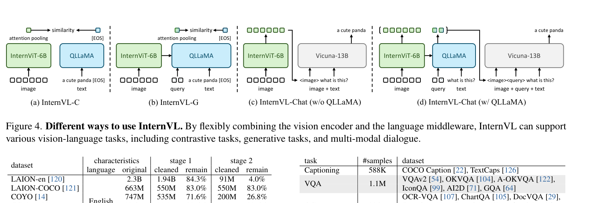
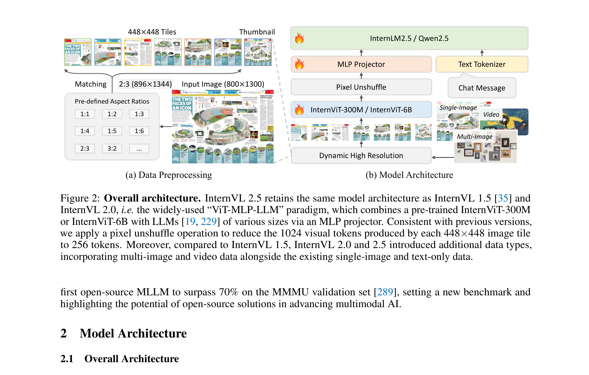
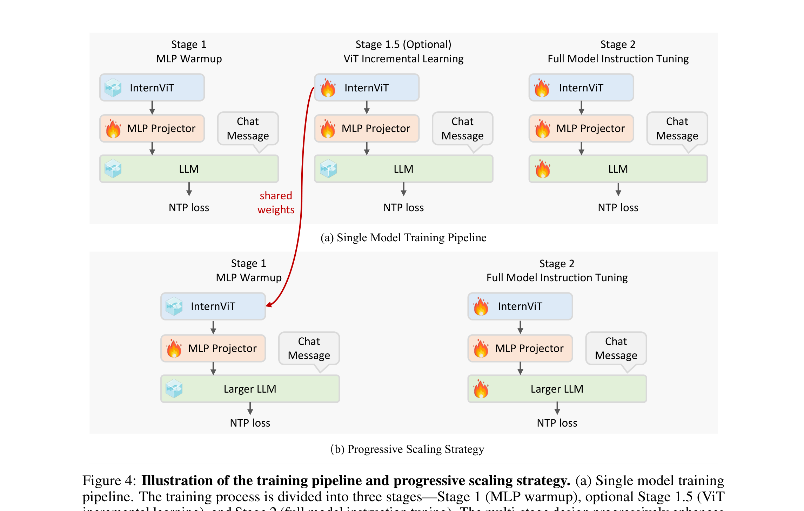
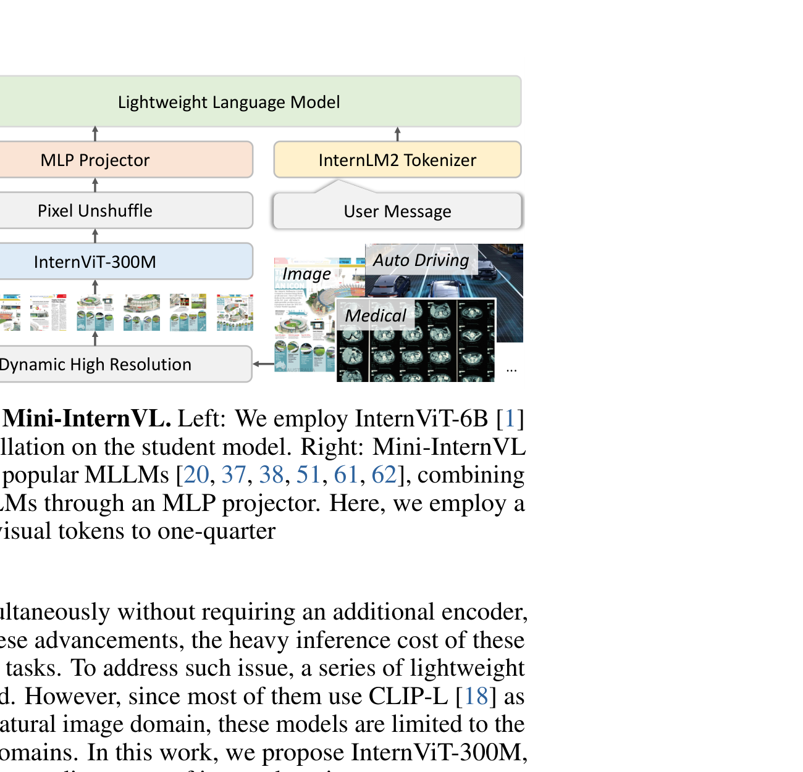
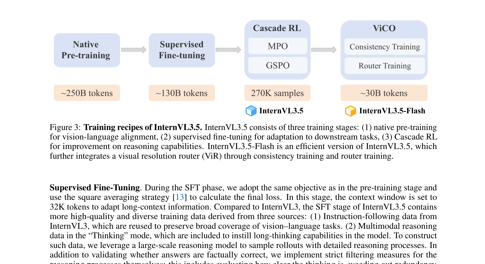
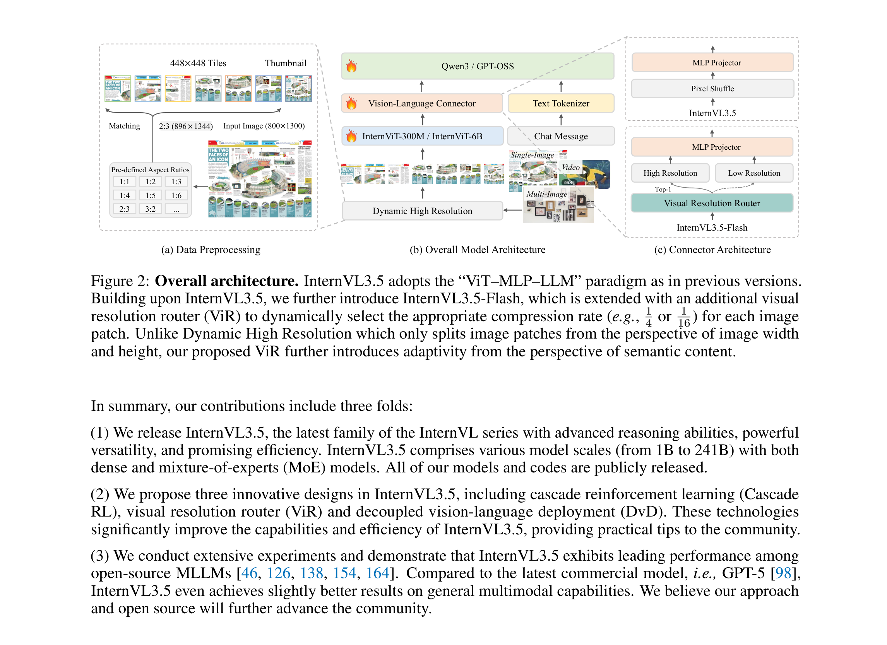
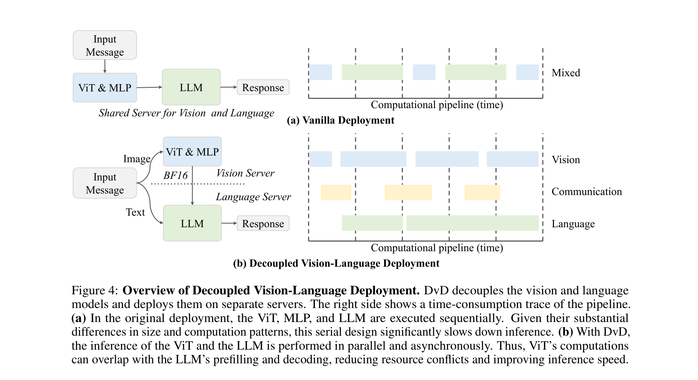

InternVL¶
📄 论文链接： - InternVL 1.0: Scaling up Vision Foundation Models and Aligning for Generic Visual-Linguistic Tasks | PDF - InternVL 1.5: How Far Are We to GPT-4V? | PDF - Mini-InternVL: A Flexible-Transfer Pocket Multimodal Model | PDF - MPO: Enhancing the Reasoning Ability of Multimodal Large Language Models via Mixed Preference Optimization | PDF - InternVL 2.5: Model, Data, and Test-Time Scaling | PDF - InternVL 3: Exploring Advanced Training and Test-Time Recipes | PDF - InternVL 3.5: Advancing Open-Source Multimodal Models in Versatility, Reasoning, and Efficiency | PDF
作者：OpenGVLab / Shanghai AI Laboratory 等
时间跨度：2023.12 – 2025.08
目录¶
- 系列概览
- 设计哲学
- 1. InternVL 1.0
- 2. InternVL 1.5
- 3. InternVL 2.0
- 4. InternVL 2.5
- 5. Mini-InternVL
- 6. MPO
- 7. InternVL 3
- 8. InternVL 3.5
- 9. 总结
系列概览¶
| 版本 | 时间 | 核心创新 | 视觉编码器 | 训练范式 |
|---|---|---|---|---|
| 1.0 | 2023.12 | 6B ViT + QLLaMA + 三阶段对齐 | InternViT-6B (48层) | 对比 → 生成 → SFT |
| 1.5 | 2024.04 | 动态高分辨率 + 持续学习 + 双语数据 | InternViT-6B-448px-V1.5 (45层) | 持续学习 + SFT |
| 2.0 | 2024 | 多图/视频支持 + per-dataset n_max | InternViT-6B/300M | （过渡版本，无独立论文） |
| Mini | 2024.10 | InternViT-300M 蒸馏 + 统一迁移框架 | InternViT-300M (蒸馏) | 对齐 → SFT |
| MPO | 2024.11 | 混合偏好优化增强 CoT 推理 | 沿用 InternVL2 | SFT + MPO |
| 2.5 | 2024.12 | 渐进扩展 + Square Averaging + 测试时缩放 | InternViT-6B/300M-V2.5 | MLP Warmup → ViT 增量 → SFT |
| 3 | 2025.04 | 原生多模态预训练 + V2PE + VisualPRM | InternViT-6B/300M-V2.5 | 原生预训练 + SFT + MPO |
| 3.5 | 2025.08 | Cascade RL + ViR + DvD | InternViT-6B/300M-V2.5 | 原生预训练 + SFT + Cascade RL |
设计哲学¶
InternVL 系列的核心贡献不在架构创新，而在训练配方、数据工程和工程策略的持续迭代。
从 1.5 开始，模型架构基本固定为：ViT → MLP Projector → LLM。真正推动性能的是几条主线：
- 视觉编码器规模化：把 ViT 从 300M 推到 6B，再蒸馏回 300M。
- 动态高分辨率：从单图 tile 切分，扩展到多图、视频。
- 训练范式演进：三阶段后训练 → 持续学习 → 原生多模态预训练。
- 推理增强：SFT → MPO → Cascade RL。
- 部署效率：Mini → ViR → DvD。
1. InternVL 1.0¶
1.1 背景¶
LLMs 规模和能力快速增长，但视觉基础模型发展滞后，成为多模态系统的瓶颈。主要问题：
- 参数量失衡：LLM 已达百亿/千亿级，视觉编码器通常只有 ~1B，无法充分发挥 LLM 能力。
- 表示不一致：传统视觉模型基于纯视觉数据或 BERT 风格对齐，与 LLM 特征空间不兼容。
- 连接层薄弱：QFormer、线性投影等“胶水”层通常轻量且随机初始化，难以捕捉复杂跨模态交互。
核心思路：把视觉基础模型规模化到与 LLM 相当的量级，并通过渐进式训练让视觉特征与 LLM 对齐。
1.2 InternViT-6B¶
InternVL 的大规模视觉编码器，采用标准 ViT，参数量扩至 6B。
| 参数 | 值 |
|---|---|
| Width | 3200 |
| Depth | 48 |
| MLP 维度 | 12800 |
| 注意力头数 | 25 |
| 总参数量 | ~5.9B |
通过超参数搜索发现：在总算力相同的情况下，深度、头维度、MLP 比例对精度影响较小。最终选择更深但更窄的配置，以兼顾精度、速度和训练稳定性。
InternViT-6B 可输出稠密特征图 F ∈ R^(H/14 × W/14 × D)，也可通过全局池化做图像分类。初始化采用 BEiT 方式。
1.3 QLLaMA🚗¶
QLLaMA 是 InternVL 1.0 用来连接视觉编码器和 LLM 的”语言中间件”，本质是一个改造过的 LLaMA 模型。
结构： - 基于多语言增强的 LLaMA-7B 初始化（总参数约 8B） - 在 LLaMA 的每层 Transformer Block 中新增 96 个可学习 Query 和 Cross-Attention 层（约 1B 新增参数，随机初始化）
工作方式： 1. InternViT-6B 输出视觉 token； 2. QLLaMA 的 96 个可学习 Query 通过 Cross-Attention “查询”这些视觉 token； 3. 得到的表示作为前缀文本输入到后续自回归 LLM（如 Vicuna-13B），引导文本生成。
相比 QFormer 的优势：
| QFormer (BLIP-2) | QLLaMA (InternVL) | |
|---|---|---|
| 初始化 | 随机初始化 | LLaMA-7B 预训练权重 |
| 参数量 | ~188M | ~8B（大 42 倍） |
| 特征空间 | 与 LLM 对齐弱 | 天然兼容 LLM 语义空间 |
由于 LLaMA-7B 初始化，QLLaMA 的特征空间与下游 LLM 天然一致，SFT 阶段仅需一个轻量 MLP 即可对接，甚至可以冻结 LLM 解码器。
为何 1.5 放弃了 QLLaMA： 动态高分辨率引入后，每张图的视觉 token 数量大幅增加（可达数千个），QLLaMA 的 Cross-Attention 计算开销随之爆炸。1.5 改用两层 MLP 作为投影层，结构更简单，但配合高质量数据和更强的 ViT，效果反而更好。
1.4 三阶段训练🚗¶

三阶段训练的核心思想是从粗粒度对齐到细粒度生成、从噪声数据到高质量数据的渐进式 pipeline：
Stage 1: 视觉-语言对比学习（Contrastive Pre-training）
Stage 2: 视觉-语言生成式训练（Generative Pre-training）
Stage 3: 监督微调（Supervised Fine-tuning）
| 阶段 | 目标 | 数据特点 | 可训练参数 |
|---|---|---|---|
| Stage 1 | 视觉-文本特征空间对齐 | 海量噪声图文对（LAION、COYO、CC3M 等） | InternViT-6B + LLaMA-7B 全部 |
| Stage 2 | 视觉驱动文本生成 | 清洗后的高质量图文数据 | 96 Query + Cross-Attention |
| Stage 3 | 对齐人类指令 | 约 400 万条高质量指令数据 | MLP（+ 可选 QLLaMA） |
Stage 1：对比学习 - 在海量噪声图文对上对齐 InternViT-6B 与多语言 LLaMA-7B。 - 使用图文对相似度矩阵上的对称交叉熵损失。 - 视觉编码器随机初始化，文本编码器用 LLaMA-7B 预训练权重，所有参数可训练。 - 输入分辨率从 196² 逐步提升到 224²。 - 作用：建立"这张图对应这段文本"的粗粒度关联。
Stage 2：生成式训练 - InternViT-6B 与 QLLaMA 主体冻结，仅训练新增的可学习 Query 和 Cross-Attention 层。 - 损失 = ITC（图文对比）+ ITM（图文匹配）+ ITG（图像到文本生成）。 - 使用经过清洗的高质量图文数据。 - 作用：让 QLLaMA 学会把视觉 token 组织成语义连贯的"前缀文本"，为 LLM 生成做准备。
Stage 3：监督微调
- 通过 MLP 层连接到现成的 LLM 解码器（Vicuna、InternLM 等）。
- 使用约 400 万条高质量指令数据。
- 可仅训练 MLP，或同时训练 MLP 与 QLLaMA，LLM 解码器可冻结。
- 支持两种配置：
-
仅 InternViT-6B（w/o QLLaMA）：适合对比/检索类任务，如 zero-shot 图像分类、图文检索。
-
完整 InternVL（w/ QLLaMA）：适合生成/对话类任务，如图像描述、多模态对话、VQA。
关键区别在于：有没有把视觉特征转换成“可生成文本”的表示。w/o QLLaMA 时只有视觉特征向量，只能做相似度计算和分类；w/ QLLaMA 时，视觉 token 被 Cross-Attention 转换成与 LLM 语义空间对齐的前缀文本，后续自回归 LLM 才能继续生成连贯句子。🚗 - 作用：让模型服从人类指令，完成 VQA、对话、OCR 等任务。
这种"先对齐、再生成、再指令"的渐进策略，避免了直接用少量高质量指令数据去训练一个随机初始化的 6B ViT，既稳定又高效。后续 2.5 / 3 系列虽然把连接层从 QLLaMA 换成了 MLP，但三阶段（或多阶段）渐进训练的思想一直延续。
1.5 与 LLM 的连接¶
由于 QLLaMA 与 LLM 共享相似特征空间，SFT 阶段只需一个 MLP 层即可把视觉特征接入现成 LLM。这种设计允许冻结 LLM 解码器，既加速训练又保留 LLM 原有语言能力。

通过组合视觉编码器与 QLLaMA，InternVL 可灵活支持对比任务（InternVL-C）、生成任务（InternVL-G）和多模态对话（InternVL-Chat）等多种视觉-语言任务。
1.6 小结¶
- 首次将视觉基础模型规模化到 6B 参数。
- 提出“视觉编码器 + 语言中间件”的参数均衡架构。
- 通过渐进式三阶段训练，从噪声图文对到高质量指令数据逐步对齐。
- 可灵活组合为 InternVL-C（对比）、InternVL-G（生成）、InternVL-Chat（对话）三种模式。
2. InternVL 1.5¶
2.1 背景¶
目标：缩小开源 MLLM 与闭源商业模型在三个维度上的差距：
- 参数规模：商业模型视觉编码器 ~1B+、LLM ~100B+，开源模型多为 300M + 7-13B。
- 图像分辨率：商业模型采用动态分辨率并保持原始宽高比；开源模型多为固定 336×336 / 448×448。
- 多语言能力：商业模型使用大量多语言数据；开源模型主要依赖英文。
2.2 持续学习¶
InternVL 1.5 对 InternViT-6B 做持续预训练，得到 InternViT-6B-448px-V1.5。
- 分辨率从 224 提升到 448。
- 层数从 48 层减少到 45 层：发现倒数第 4 层（即第 45 层）的特征对多模态任务最有效，因此丢弃最后 3 层。
- 在高质量 OCR、图像描述等数据上进一步训练。
- 视觉编码器可跨 LLM 复用：从 Nous-Hermes-2-Yi-34B 换到 InternLM2-20B 后，InternViT-6B-448px-V1.5 无需重新训练。
2.3 动态高分辨率🚗¶
核心思想：根据输入图像的宽高比和分辨率，动态切分为多个 448×448 的 tile。
输入图像 H × W
↓
计算宽高比 ratio = W / H
↓
从预定义集合中匹配最接近的宽高比（1~12 个 tile 共 35 种组合）
↓
resize 后切分，并保留一张全局缩略图
↓
每个 tile 经 ViT 得到 1024 token，再 Pixel Shuffle 4× 压缩到 256 token
- 训练时 tile 数为 1~12。
- 测试时可 zero-shot 扩展到最多 40 个 tiles，支持约 4K 分辨率。
- Pixel Shuffle 把视觉 token 数压缩为 1/4，缓解高分辨率带来的 token 爆炸。

图 1：动态高分辨率预处理与 ViT-MLP-LLM 架构。左侧为按宽高比切分 tile 并保留缩略图；右侧为模型整体架构。2.4 MLP 投影器🚗¶
InternVL 1.5 把 1.0 的 QLLaMA 替换为简单的 MLP Projector，形成标准 ViT-MLP-LLM 架构。配合 Pixel Shuffle，结构更简单、效率更高。
2.5 双语数据¶
构建高质量中英双语数据集，覆盖自然场景、文档、图表、OCR 等。关键做法：
- 收集并清洗多语言公开数据。
- 利用开源 LLM 或 GPT-3.5 将英文数据集翻译成中文，保留专有名词、品牌、地名等英文原文。
- 微调阶段覆盖通用 QA、科学图像、图表、OCR、文档、视觉定位、多轮对话等任务。
2.6 与 1.0 对比¶
| 维度 | InternVL 1.0 | InternVL 1.5 |
|---|---|---|
| 视觉编码器 | InternViT-6B (48层, 224px) | InternViT-6B-448px-V1.5 (45层) |
| 输入分辨率 | 固定 336/448 | 动态 448×448 (1~40 tiles) |
| 语言中间件 | QLLaMA (8B) | MLP Projector |
| LLM | Vicuna-13B | InternLM2-20B |
| 训练数据 | 主要英文 | 中英双语 |
| 最大分辨率 | 448×448 | ~4K |
3. InternVL 2.0¶
3.1 定位¶
InternVL 2.0 没有发表独立论文，是 1.5 → 2.5 之间的过渡版本，核心价值是验证 1.5 架构的可扩展性。
3.2 相对 1.5 的变化¶
- 数据类型：新增多图像和视频支持。
- 动态分辨率：引入 per-dataset 的
n_max控制，替代 1.5 的全局统一n_max = 12。 - LLM 扩展：从 InternLM2 扩展到 LLaMA-3、Nous-Hermes 等多种 backbone。
- 渐进扩展：在实践中使用先用小 LLM 训练 ViT 再换大 LLM 的策略，到 2.5 才被系统文档化。
4. InternVL 2.5¶
4.1 背景¶
InternVL 2.5 系统性探索 MLLM 中的 模型规模、数据规模、测试时计算 三者的关系。几个核心观察：
- 大规模视觉编码器能显著降低对训练数据量的依赖。
- 数据质量比单纯堆量更重要，异常样本（如重复模式）会严重损害 CoT 推理。
- 测试时使用 CoT 等推理策略能有效提升困难任务表现。
4.2 架构¶
沿用 InternVL 1.5 / 2.0 的 ViT-MLP-LLM 范式：
- 视觉编码器：InternViT-300M 或 InternViT-6B（V2.5 版本）。
- 连接器：随机初始化的两层 MLP。
- LLM：InternLM 2.5、Qwen 2.5 等。
- 保留 Pixel Unshuffle：每个 448×448 tile 的 1024 token 压缩为 256 token。
- 保留动态高分辨率预处理。
图 2：InternVL 2.5 沿用 ViT-MLP-LLM 范式，支持单图、多图与视频输入。
4.3 三阶段训练¶
Stage 1: MLP Warmup
Stage 1.5: ViT 增量学习（可选）
Stage 2: 全模型指令微调
Stage 1：MLP Warmup - 仅训练 MLP，ViT 与 LLM 冻结。 - 使用预训练混合数据，从这一阶段就引入动态高分辨率。
Stage 1.5：ViT 增量学习 - 训练 ViT + MLP，LLM 仍冻结。 - 学习率更低，防止遗忘已学视觉能力。 - 增强视觉编码器在稀有领域（多语言 OCR、数学图表）的特征提取。 - 训练一次后可复用给不同 LLM，因此常为可选步骤。
Stage 2：全模型指令微调 - 端到端训练 ViT、MLP、LLM。 - 使用高质量多模态指令数据，严格控制数据质量。 - 统一学习率，超参数保持简单。
4.4 渐进扩展🚗¶
核心思想：先用小 LLM 训练/优化 ViT，再把学好的 ViT 迁移到大 LLM，无需重新训练视觉编码器。
小 LLM (如 20B):
Stage 1 → Stage 1.5 (训练 ViT) → Stage 2
大 LLM (如 72B):
Stage 1 → 跳过 Stage 1.5 (复用 ViT) → Stage 2
这证明了 ViT 学到的视觉特征是通用的，可被不同 LLM 理解，从而大幅降低训练成本。

图 3：InternVL 2.5 的三阶段训练流水线（上）与渐进扩展策略（下）。小 LLM 上训好的 InternViT 可直接迁移到大 LLM。4.5 动态分辨率扩展¶
把 1.5 的动态高分辨率从单图扩展到多图和视频：
- 单图：最大 tile 数
n_max全部分配给一张图。 - 多图：
n_max按图片数量比例分配，用Image-1、Image-2等标签区分。 - 视频：
n_max = 1，每帧 resize 到 448×448，用Frame-1、Frame-2等标签顺序输入。
4.6 Square Averaging¶
为平衡不同长度回复对损失的贡献，提出 Square Averaging：
其中 l 为该回复的 token 数。它介于 token averaging（偏向长回复）和 sample averaging（偏向短回复）之间。
4.7 与 1.5 对比¶
| 维度 | InternVL 1.5 | InternVL 2.5 |
|---|---|---|
| 架构 | ViT-MLP-LLM | ViT-MLP-LLM（沿用） |
| 数据类型 | 单图 + 文本 | 单图 + 多图 + 视频 + 文本 |
| 动态分辨率 | 单图 | 扩展到多图/视频 |
| 训练策略 | 持续学习 + SFT | MLP Warmup → ViT 增量 → SFT |
| ViT 训练 | 冻结 | 可训练（Stage 1.5） |
| 损失权重 | Token Averaging | Square Averaging |
| LLM | InternLM2-20B | InternLM 2.5 / Qwen 2.5 |
5. Mini-InternVL¶
5.1 背景¶
MLLM 性能强劲但规模过大，难以在消费级 GPU 或边缘设备部署。现有轻量模型多用 CLIP 类视觉编码器，仅在自然图像域训练，泛化能力有限。Mini-InternVL 的目标是在小参数规模下保留大模型的视觉知识。
5.2 InternViT-300M¶
通过知识蒸馏从 InternViT-6B 得到轻量视觉编码器。
教师：InternViT-6B (5.9B)
学生：CLIP-ViT-L-336px 初始化 (300M)
对齐目标：师生网络最后 K 层 hidden state 的负余弦相似度
训练数据：自然图像、OCR、图表、多学科图像
蒸馏后的 InternViT-300M 继承了 InternViT-6B 的跨域视觉知识。

图 4：Mini-InternVL 架构。左侧为 InternViT-300M 蒸馏；右侧为 ViT-MLP-LLM 架构及下游迁移示例。5.3 模型系列¶
| 模型 | 视觉编码器 | LLM | 总参数 |
|---|---|---|---|
| Mini-InternVL-1B | InternViT-300M | Qwen2-0.5B | ~1B |
| Mini-InternVL-2B | InternViT-300M | InternLM2-1.8B | ~2B |
| Mini-InternVL-4B | InternViT-300M | Phi-3-mini | ~4B |
采用 Pixel Unshuffle 将视觉 token 压缩到 1/4，支持动态高分辨率输入。
5.4 训练¶
- 阶段 1：语言-图像对齐：仅训练 MLP，冻结 ViT 和 LLM。
- 阶段 2：视觉指令微调：全参数微调。
两阶段的数据构建方式与 InternVL 1.5 保持一致。
5.5 迁移框架¶
将不同下游任务统一转化为 VQA/对话格式：
- 图像分类 → 多项选择问答
- 视觉定位 →
<ref>/<box>特殊 token - 区域感知 → 坐标框/掩码限定
- 多视角图像 → 多
<img>标签 - 视频帧 → 交错图像格式
迁移时全参数微调，并混入通用多模态数据以保持通用能力。
5.6 与 1.5 对比¶
| 维度 | InternVL 1.5 | Mini-InternVL |
|---|---|---|
| 视觉编码器 | InternViT-6B (5.5B) | InternViT-300M (0.3B, 蒸馏) |
| LLM | InternLM2-20B | Qwen2-0.5B / InternLM2-1.8B / Phi-3 |
| 总参数 | ~25.5B | 1B - 4B |
| 核心策略 | 动态分辨率 + 双语数据 | 知识蒸馏 + 统一迁移 |
| 目标 | 缩小与商业模型差距 | 轻量化 + 下游迁移 |
6. MPO¶
6.1 背景¶
开源 MLLM 通常采用“预训练 + SFT”范式，直接回答表现不错，但使用 Chain-of-Thought（CoT）推理时性能反而下降。根本原因是分布偏移：
- 训练时使用 teacher forcing，基于 ground-truth token 预测下一个 token。
- 推理时模型只能基于自己生成的 token 继续预测。
- CoT 需要生成长段推理过程，分布偏移问题被进一步放大。
MPO 通过偏好优化来缓解这一问题，提升多模态推理能力。
6.2 MMPR 与 DropoutNTP¶
MMPR（MultiModal Preference Reasoning）是 MPO 构建的多模态推理偏好数据集，约 300 万样本，覆盖 VQA、科学、图表、数学、OCR、文档等领域。
- 有明确标准答案的样本：让模型先给推理过程再输出最终答案，正确答案作为 chosen，错误答案作为 rejected。
- 无明确标准答案的样本：提出 DropoutNTP：
- 把模型生成的完整回答作为 chosen；
- 将该回答截断一半，再让模型在无图像输入条件下补全剩余部分；
- 补全结果作为 rejected（因缺失图像信息，更容易产生幻觉）。
6.3 MPO 算法¶
MPO 将三类损失混合：
- DPO 损失：学习成对响应之间的相对偏好。
- BCO 损失：学习单个响应的绝对质量。
- SFT 损失：学习如何生成高质量的偏好响应。
关键发现：参考模型必须保持冻结。去掉或更新参考模型都会导致性能下降。
6.4 训练流程¶
InternVL2 (预训练 + SFT)
↓
在 MMPR 上用 MPO 训练
↓
InternVL2-MPO
6.5 与 DPO/RLHF 对比¶
| 方法 | 是否需要奖励模型 | 是否在线采样 | 核心特点 |
|---|---|---|---|
| DPO | 否 | 否 | 仅学习成对偏好 |
| RLHF | 是 | 是 | PPO + 奖励模型 |
| MPO | 否 | 否 | DPO + BCO + SFT，专注 CoT 推理 |
7. InternVL 3¶
7.1 背景¶
传统 MLLM 先在纯文本语料上预训练 LLM，再通过多阶段 pipeline 把视觉能力“后装”到文本模型上，属于 post-hoc 训练。这带来几个问题：
- 模态对齐困难。
- 需要复杂的参数冻结策略和辅助数据（如 OCR）。
- 容易损失 LLM 原有语言能力。
InternVL 3 提出原生多模态预训练，把语言预训练和多模态对齐合并为单一阶段。
7.2 原生预训练¶
输入：多模态数据（图文、视频-文本、交错图文）+ 纯文本数据
目标：自回归 Next Token Prediction
关键：loss 只计算在文本 token 上，视觉 token 仅作为条件上下文
优化：ViT + MLP + LLM 全部参数一起更新
数据配比约为 文本 : 多模态 = 1 : 3，总预训练 token 约 200B。所有 LLM 均从 base 预训练模型初始化，而非指令微调版本。
7.3 V2PE¶
Variable Visual Position Encoding 用于支持更长的多模态上下文。
- 文本 token：位置索引 +1。
- 视觉 token：位置索引 +δ，其中 δ < 1。
- 同一图像内部 δ 保持不变，维护视觉 token 的相对位置。
- 训练时 δ 从
{1, 1/2, 1/4, ..., 1/256}中随机采样。 - δ = 1 时退化为 InternVL 2.5 的标准位置编码。
7.4 SFT + MPO¶
- SFT：用高质量监督数据覆盖工具使用、GUI 操作、3D 场景、长上下文、视频、科学图表等更多领域。
- MPO：在 SFT 之后继续使用 MMPR 偏好数据训练，缓解分布偏移，提升 CoT 推理能力。
7.5 测试时缩放¶
InternVL 3 使用 Best-of-N 策略，并用 VisualPRM-8B 作为评价模型：
- VisualPRM 把解题过程拆成多轮对话，每轮给出当前步骤，模型预测该步骤是否正确。
- 每一步得分定义为模型输出“正确”的概率，最终得分为各步骤得分平均。
- 推理时生成 N 个候选解答，VisualPRM 评分后选择最优。
7.6 与 2.5 对比¶
| 维度 | InternVL 2.5 | InternVL 3 |
|---|---|---|
| 预训练范式 | 后训练（MLP Warmup → ViT 增量 → SFT） | 原生多模态预训练 |
| 参数优化 | 分阶段冻结 | 全参数联合优化 |
| 位置编码 | 标准位置编码 | V2PE |
| 后训练 | SFT | SFT + MPO |
| 测试时缩放 | 无 | Best-of-N + VisualPRM |
| LLM 初始化 | 通常用指令版 | 用 base 版 |
8. InternVL 3.5¶
8.1 背景¶
InternVL 3.5 同时瞄准三个目标：
- 通用性（Versatility）：继续缩小与闭源顶尖模型的通用任务差距。
- 推理能力（Reasoning）：解决离线 RL（MPO）性能上限受限于静态数据的问题。
- 推理效率（Efficiency）：降低高分辨率、长上下文带来的计算成本。
8.2 Cascade RL¶
Cascade RL 把强化学习分为两个阶段：
阶段 1: 离线 RL (MPO)
- 使用预收集的偏好数据
- 稳定收敛，获得良好初始策略
阶段 2: 在线 RL (GSPO)
- 在线采样 rollout
- 无需参考模型，优势函数由同查询下多条响应的奖励归一化得到
- 进一步提升性能上限
优势：离线阶段解耦 rollout 收集与参数更新，缓解 reward hacking；MPO 产生的 rollout 可被多模型复用，摊薄在线采样成本。

图 5：InternVL 3.5 训练流程。原生预训练 → SFT → Cascade RL（MPO + GSPO）；Flash 变体额外经过 ViCO 训练 ViR。8.3 ViR¶
Visual Resolution Router 是 InternVL 3.5-Flash 引入的动态 patch 压缩机制。
- 传统 Dynamic High Resolution 仅从宽高比维度切分 patch，所有 patch 统一压缩率。
- ViR 从语义内容维度决定每个 patch 的压缩率：语义丰富的 patch 用低压缩率，语义稀疏的 patch 用高压缩率。
- 每个 patch 先表示为 1024 token，经 Pixel Shuffle 可压缩到 256 或 64 token。
训练方式 ViCO（Visual Consistency Learning）：
- Consistency Training：最小化不同压缩率下模型输出分布的 KL 散度，保证压缩后语义一致。
- Router Training：把 ViR 训练为二分类器，主干 MLLM 冻结，标签由压缩带来的损失比值决定。
目标：视觉 token 数量显著减少，性能几乎无损。

图 6：InternVL 3.5 架构。右侧为 InternVL 3.5-Flash 的 ViR 动态压缩连接器。8.4 DvD¶
Decoupled Vision-Language Deployment 把视觉编码器和语言模型分离部署到不同 GPU：
- Vision Server：部署 ViT + MLP（Flash 变体还包括 ViR），批量处理图像。
- Language Server：仅执行 LLM 的 prefilling 与 decoding。
- 视觉特征以 BF16 格式单向传输，可选 RDMA 加速。
- 视觉端与语言端可并行异步执行，形成三阶段流水线，减少阻塞。

图 7：DvD 把视觉编码器与 LLM 分离部署，使视觉计算与 LLM 的 prefilling/decoding 重叠执行。8.5 SFT 增强¶
SFT 阶段约 5600 万样本、130B token，上下文窗口 32K。新增三类数据：
- 指令遵循数据：复用 InternVL 3 的指令数据，保持广泛任务覆盖。
- 多模态 Thinking 数据：带详细推理过程的长思考数据，覆盖数学、科学等领域。
- 能力扩展数据：GUI 交互、具身交互、SVG 理解与生成。
8.6 模型变体¶
| 模型 | 类型 | 视觉编码器 | 语言模型 | 总参数 |
|---|---|---|---|---|
| InternVL3.5-1B | Dense | InternViT-300M | Qwen3-0.6B | ~1B |
| InternVL3.5-8B | Dense | InternViT-300M | Qwen3-8B | ~8B |
| InternVL3.5-14B | Dense | InternViT-300M | Qwen3-14B | ~15B |
| InternVL3.5-38B | Dense | InternViT-6B | Qwen3-32B | ~38B |
| InternVL3.5-20B-A4B | MoE | InternViT-300M | GPT-OSS-20B | 20B (激活 4B) |
| InternVL3.5-30B-A3B | MoE | InternViT-300M | Qwen3-30B-A3B | 30B (激活 3B) |
| InternVL3.5-241B-A28B | MoE | InternViT-6B | Qwen3-235B-A22B | 241B (激活 28B) |
A 表示激活参数量。Flash 变体在 Dense 模型基础上加入 ViR，面向资源受限场景。
8.7 与 3 对比¶
| 维度 | InternVL 3 | InternVL 3.5 |
|---|---|---|
| RL 策略 | MPO (离线) | Cascade RL (离线 MPO + 在线 GSPO) |
| 视觉 token 压缩 | 固定 Pixel Shuffle | ViR 动态压缩 |
| 部署方式 | 传统串行 | DvD 视觉-语言分离 |
| 模型类型 | Dense | Dense + MoE |
| LLM | Qwen2.5 系列 | Qwen3 系列 / GPT-OSS |
| SFT 数据 | ~56M 样本 | ~56M + Thinking + 能力扩展 |
| 新能力 | 基础多模态 | GUI、具身、SVG |
9. 总结¶
9.1 演进脉络¶
视觉编码器：
InternViT-6B (48层, 224px)
↓ 持续学习，丢弃最后3层
InternViT-6B-448px-V1.5 (45层)
↓ 蒸馏
InternViT-300M
↓ 增量预训练
InternViT-6B/300M-V2.5
↓ 沿用
InternViT-6B/300M-V2.5
训练范式：
三阶段后训练 (1.0)
↓ 持续学习 + SFT (1.5)
↓ MLP Warmup → ViT 增量 → SFT (2.5)
↓ 原生多模态预训练 (3)
↓ 原生预训练 + Cascade RL (3.5)
分辨率策略：
固定 224/448 (1.0)
↓ 动态 tile (1.5)
↓ 多图/视频 (2.0/2.5)
↓ ViR 动态压缩 (3.5)
推理增强：
SFT → MPO → Cascade RL
效率优化：
Mini-InternVL → ViR → DvD
9.2 关键洞察¶
- 视觉编码器规模化是基础：6B ViT 不仅提升视觉理解能力，还降低了对训练数据量的依赖。
- 视觉编码器可复用：从 1.5 开始，InternViT 学到的视觉特征不绑定特定 LLM，可跨 backbone 迁移。
- 动态分辨率是实用化的关键：文档、图表等高分辨率场景需要 tile 切分和 Pixel Shuffle/Unshuffle。
- 原生预训练是范式变革：把语言预训练和多模态对齐合并为单一阶段，简化了 pipeline。
- 偏好优化是推理能力的突破口：MPO 到 Cascade RL 系统性地解决了 CoT 推理的分布偏移问题。
- 效率与能力同样重要：Mini、ViR、DvD 代表了从研究到部署的完整路径。